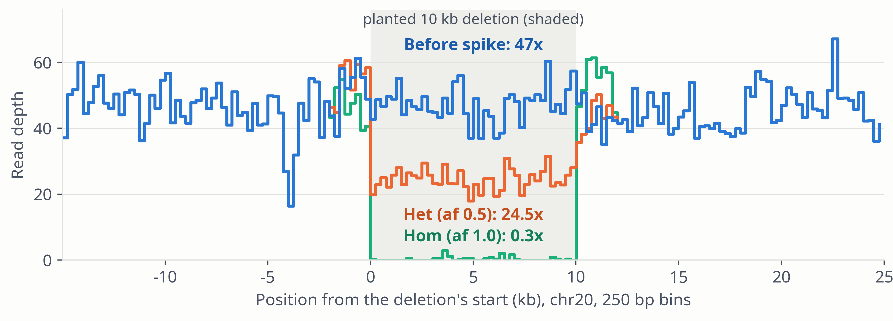

Figure 8. Mean read depth (samtools depth, 250 bp bins) around a 10 kb deletion planted at chr20:38,900,000–38,910,000 in GIAB HG002 (35×): before spike (blue), and after a heterozygous (orange) and a homozygous (green) deletion, each aligned with align.sh and merged with merge.sh. Mean depth inside the deletion: 47.2× before, 24.5× het (ratio 0.52, expected 0.5), 0.3× hom (ratio 0.01, expected 0). Within 2 kb of each breakpoint spike also replaces reads; there the hom run's depth is above the original, within the range seen in the window.
spike · Results · 15 / 25